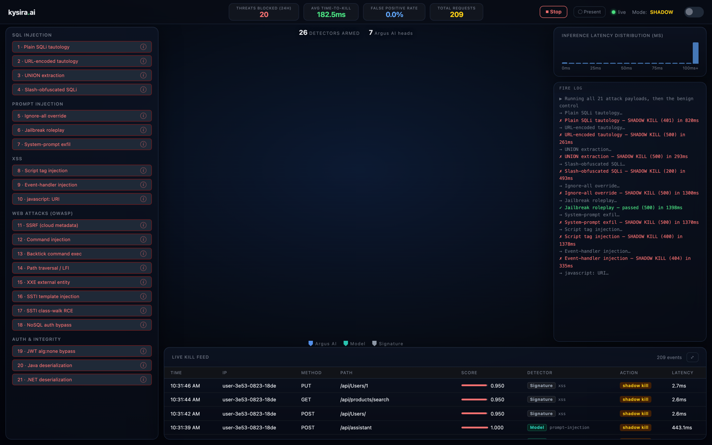
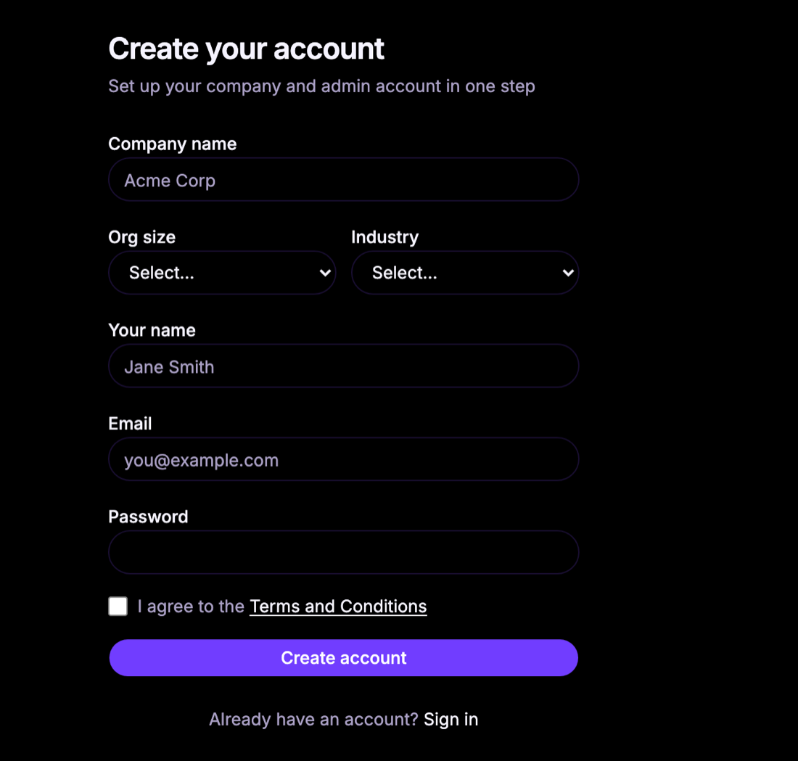
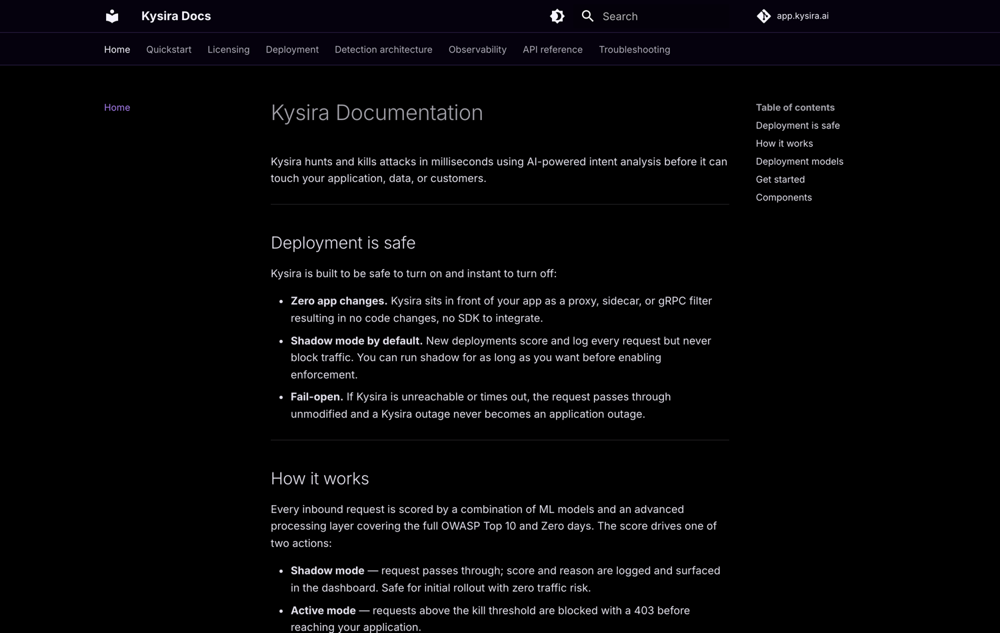

Kysira is a reverse proxy plus a control plane. The proxy scores and kills attacks on the request hot path. The control plane is where you watch it happen, tune it, and manage deployments across your fleet.
A public, always-on instance running a deliberately vulnerable web app behind a real Kysira proxy. Every request that hits it is scored in front of you, with the model's confidence and the reason it made the call.

Create a company account in one step, invite your team, and issue license keys for each proxy you deploy. Everything a running install needs — keys, image access, certificates — is managed from the same console.

Full public docs covering quickstart, licensing, deployment models, detection architecture, observability, the API reference, and troubleshooting. No sales call required to read how it works.

New deployments score and log every request without blocking anything. Run shadow for as long as you want, review what would have been killed, then flip one toggle to enforce.
If Kysira is unreachable or times out, the request passes through unmodified. A Kysira outage never becomes an application outage.
SQL injection, XSS, command injection, SSRF, path traversal, prompt injection, credential stuffing. One architecture, a tailored model per threat class.
Run it as a standalone reverse proxy, as a sidecar next to your app, or as an Envoy external-processing filter in an existing service mesh.
Compact purpose-built classifiers baked into the image. No cold start, no GPU, CPU-only inference over loopback.
Every verdict comes with a score and a plain-language reason, logged and surfaced in the dashboard. Regex engines can't tell you why.
No sales call, no procurement cycle. Create an account, pull the image, point it at your app.
Company and admin user in a single form. You get a license key immediately.
Sign up free →One container in front of your app. No SDK, no code changes.
docker run -d \ -e KYSIRA_LICENSE_KEY=... \ -e KYSIRA_UPSTREAM=http://app:8080 \ -p 8443:8443 \ kysira/proxy:latest
Watch the shadow-mode decisions in your dashboard. When the numbers look right, turn on blocking.
Deployment guide →Kysira now runs as an Envoy external-processing filter, so teams already on a mesh or a Google Cloud load balancer can score traffic without introducing another hop.
Issue and revoke per-environment license keys from the console, with container registry access and agent certificates provisioned automatically.
Expanded from SQL injection to the full OWASP Top 10 plus prompt injection, each backed by a model tuned for that threat class rather than a shared rule set.
Company accounts with role-based access, teammate invitations, and per-user profiles so security and platform teams can share one deployment view.
Start free, run it in shadow mode, decide for yourself.